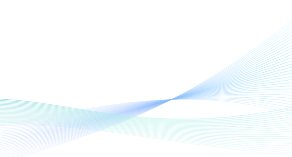
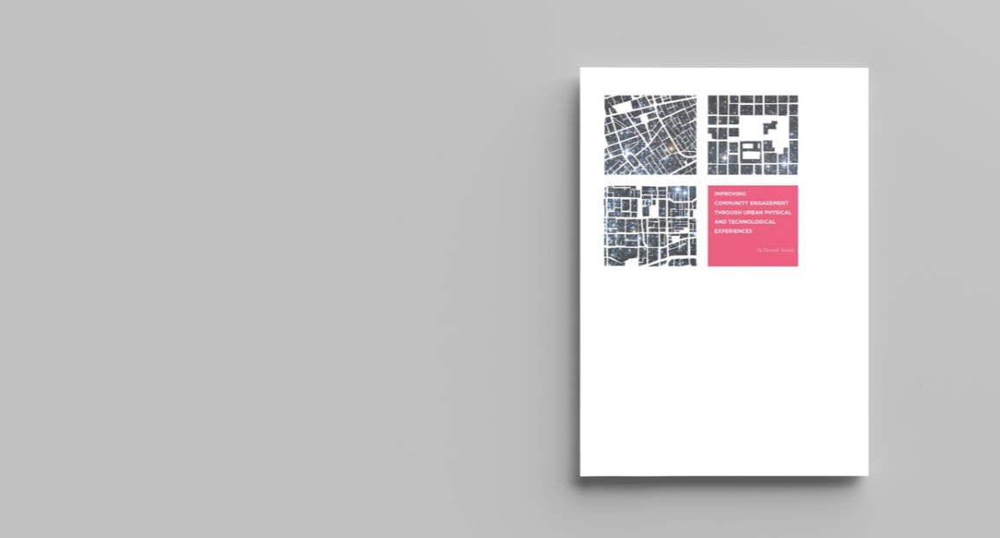
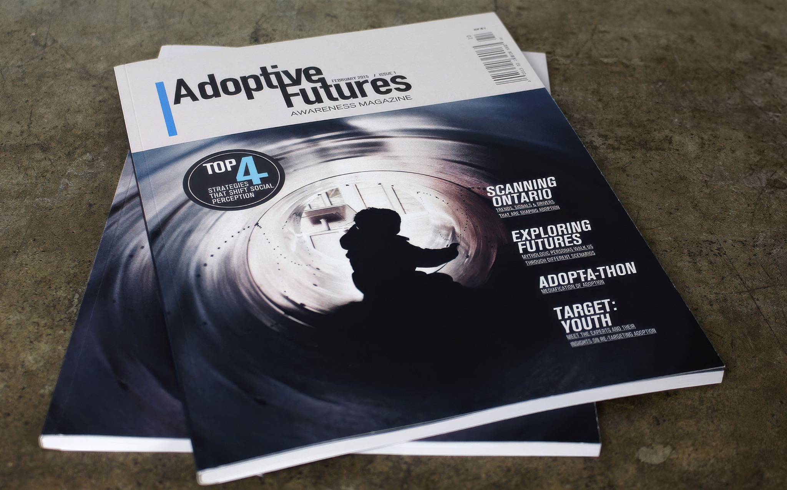

Research Design & Methods
Mixed-methods research · Stakeholder interviews · Surveys and focus groups · Contextual observation · Ethnographic research · Usability testing
Research & Strategy
My research and strategy practice builds on architectural training and a Master of Design in Strategic Foresight and Innovation from OCAD University. Across workplace research, healthcare software, and creative leadership roles, I have used interviews, observation, surveys, co-design, and research synthesis to understand behaviours, identify barriers, and inform product, service, and organizational decisions. Strategic foresight extends this approach through systems mapping, scenario development, and speculative design, helping explore emerging changes and their implications. The projects gathered here span professional practice and academic work, connecting research findings and future possibilities with practical recommendations, frameworks, and plans.
Mixed-methods research · Stakeholder interviews · Surveys and focus groups · Contextual observation · Ethnographic research · Usability testing
Qualitative and quantitative analysis · Research synthesis · Systems mapping · Journey mapping · Insight visualization · Research reports and recommendations
Workshop planning and facilitation · Participatory research · Co-design workshops · Cross-functional collaboration · Stakeholder alignment · Concept development and validation
Scenario development · Speculative design · Assumption testing · Opportunity identification · Strategic roadmapping · Organizational frameworks and playbooks
AI use case mapping · Business case development · Data readiness assessment · Tool and vendor evaluation · Governance framework development · Ethics integration · Capability building

Designing an enterprise AI readiness program spanning technology assessment, responsible procurement, cross-regional governance, and organizational capability building.
Read case study
A study of how temporary architecture and digital participation can shape public space, with a 2025 update on access, trust, and community influence.
Read case studyA proposed five-year AI roadmap for internal operations, acquisition integration, and workforce readiness.
Read case studyA research-led study informing stakeholder alignment, platform planning, and a phased approach to community growth.
Read case study
A speculative future experience and editorial magazine exploring possible futures for Ontario’s adoption system.
Read case study
Experience research spanning usability testing, shadowing, interviews, and co-design, synthesized into visual assets that informed product direction, roadmap planning, and new feature development.
Read case studyInterviews, focus groups, and on-site observation translated into workplace scenarios and recommendations for space use and real estate planning.
Read case studyDesigning child- and youth-friendly feedback forms to help young patients and their caregivers express their experiences of hospital care.
Read case study
Combining contextual inquiry and co-design to understand stakeholder needs and inform recommendations for a healthcare partnership.
Read case studyGet in touch to discuss opportunities
or potential collaborations.
Explore my professional background
and connect with me.